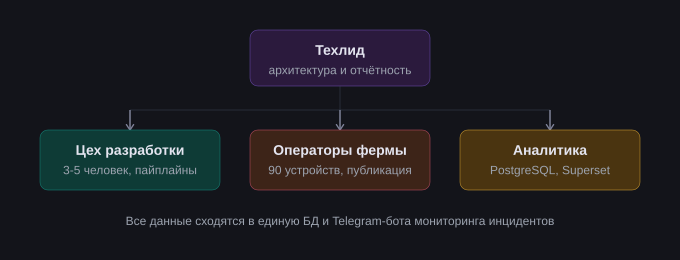
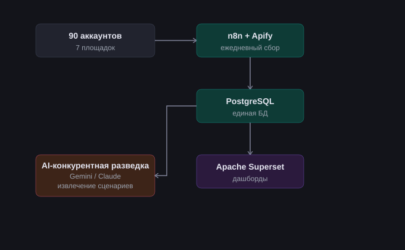
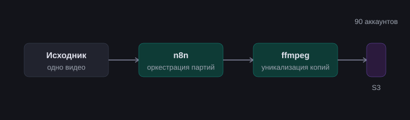
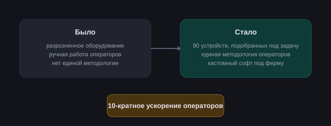
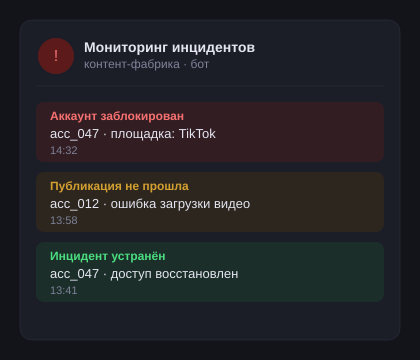
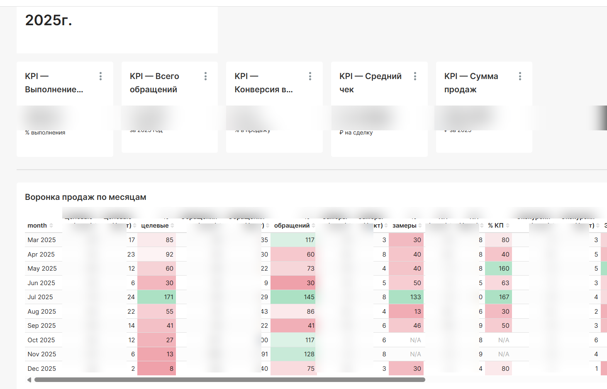
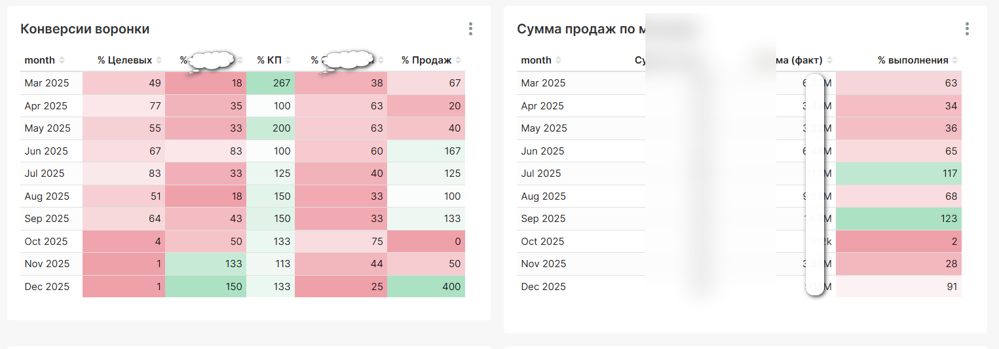
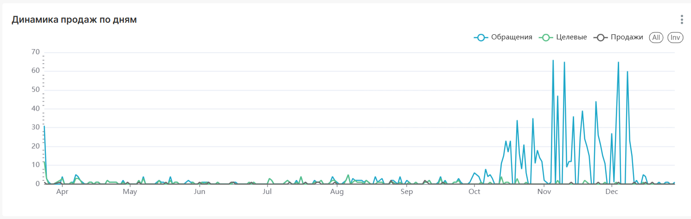
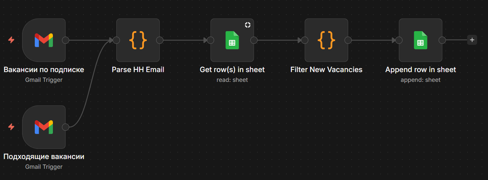
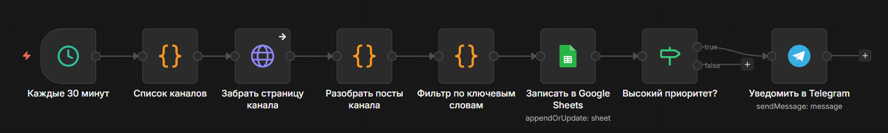

Автоматизация · n8n · AI-LLM · Technical PM
Анастасия Чернова
Единолично разрабатывала и запускала вебинарные воронки и интерактивные форматы для вовлечения аудитории – самый ранний и самый универсальный по набору задач этап, до перехода в техлиды.
Руководила технической стороной разработки чат-ботов в команде 3–5 человек, часто работала руками наравне с командой. Проекты строились на конструкторе Salebot (Telegram, VK и другие мессенджеры), но регулярно выходили за его рамки – кастомные интеграции через API и n8n там, где возможностей конструктора не хватало.
До перехода на контент-фабрику настраивала сквозную аналитику для отслеживания эффективности рекламных подрядчиков. Компании нужно было точно считать количество и стоимость лидов от ~10 разных подрядчиков, до этого данные собирались вручную.
Совмещала роль техлида и хендс-он разработчика в проекте по промышленному производству контента для соцсетей: 90 аккаунтов на 7 площадках, команда операторов публиковала до 1890 роликов в день.





Отвечала за техническую инфраструктуру онлайн-школы: автоворонки, вебинары, аналитику и приём платежей – в условиях больших пиковых нагрузок и постоянно растущей базы клиентов (свыше 800 тысяч на пике).
Дополнительный опыт: в разные периоды также выполняла функции финменеджера, менеджера по продажам и куратора курсов – что дало редкое для технического специалиста понимание всех сторон бизнеса онлайн-школы.
Заказчик – B2B SaaS-компания – заказал одностраничный лендинг: собрать по дизайну из Figma, довести до продакшена и связать все заявки с CRM. Проект вырос от вёрстки до полноценной инфраструктуры сбора и маршрутизации лидов.
Лиды квалифицируются в одной CRM, а принятые – передаются в другую, где идёт работа с клубом и продажи. Задача – найти и устранить «тихие» баги в уже существующей двусторонней синхронизации между CRM. Разработка велась в связке с AI-инструментами; диагностика первопричин, логика маппинга и финальная доводка – ручная инженерная работа.
Заказчик и детали скрыты по NDA. Технологический стек и методы приведены как есть – они и составляют суть компетенций.
Система работает по схеме: лиды поступают в amoCRM, где менеджеры их квалифицируют. Принятые лиды – те, кто принял оффер – должны автоматически создаваться в Bitrix24, где ведётся вся дальнейшая работа с клубом и продажи. Синхронизация двусторонняя: изменения статусов и ключевых полей должны отражаться в обеих системах.
Проблема: часть данных терялась или дублировалась, но без явных ошибок – воркфлоу отрабатывали штатно, логи были чистые. «Тихие» баги: данные не приходили туда, куда должны были, или приходили не те.
Стек: n8n · amoCRM API · Bitrix24 REST API · PostgreSQL · Directus (headless CMS как справочник маппинга) · webhooks
Серия инженерных задач для корпоративного заказчика: расследование сбоев, сквозные интеграции между headless-CMS, трекером задач и платформой автоматизации, скриптовые доработки и восстановление потерянных данных. Диагностика первопричин, доказательная база и решения по каждому кейсу – ручная инженерная работа.
Проблема: сводный отчёт падал с общей ошибкой на части периодов, сбой не попадал в лог даже на уровне DEBUG – плагин проглатывал исключение.
Причина: циклическая иерархия – две задачи ссылались друг на друга как «эпик» и «родитель». Построение дерева зацикливалось на этой паре.
Итог: разорвала цикл, просканировала остальные задачи на похожие аномалии. Отчёт заработал за все периоды.
Задача: два бизнес-поля из headless-CMS должны автоматически появляться в задачах трекера при создании и изменении.
Работа: доработала цепочку webhook CMS → n8n → REST трекера, выровняла справочники. Написала разовый REST-скрипт и заполнила поля у ~350 исторических задач.
Решение: Groovy-листенер в скриптовом движке трекера – вместо хрупкой встроенной автоматизации, которая до этого только ломала данные. Обошла перезапись формой через отложенное выполнение в отдельном потоке.
Бонус: выяснила, что старое неверно настроенное правило затёрло поля у 6 реальных задач, и восстановила значения из истории изменений через REST.
Причина: несколько правил без условия по типу задачи копировали значения «из родителя», которого у дефектов нет – и вместо копирования очищали поля.
Итог: вышла на недокументированный REST-эндпоинт, выгрузила все правила проекта программно. Добавила недостающие условия, отключила дубликаты.
Работа: собрала требования, проверила объём миграции (~170 значений), выявила неочевидные риски: неоднозначный маппинг и конфликт обязательности поля с отложенным автозаполнением.
Результат: декомпозировала на подзадачи, дала честную оценку с разделением «чистых трудозатрат» и «срока с буфером на согласования».
Стек: Jira (Server/DC) · ScriptRunner · Groovy · Jira Java API · Jira REST API · Automation for Jira · n8n · Directus · PowerShell · REST/webhooks · анализ логов
Для клиента в сфере услуг с выездными сделками построила аналитическую систему учёта воронки продаж – до этого данные велись вручную в таблицах, без единой картины по конверсии на каждом этапе.



Личная система для собственного поиска работы: n8n-воркфлоу парсит email-дайджесты HH.ru (Gmail Trigger → Code parsing → Google Sheets с дедупликацией по vacancyId), плюс отдельный воркфлоу мониторинга тематических Telegram-каналов – прямой скрапинг t.me/s/, минуя нестабильный RSSHub – с уведомлениями по приоритетным вакансиям.


Живой счётчик в графе выше показывает реальное число вакансий, обработанных ботом – данные подтягиваются через вебхук в n8n (ключи Google Sheets остаются на сервере, в браузер не уходят).
Список резюме на сайте – это просто текст. Хотелось показать рекрутёру живой пример технической работы, а не только перечисление технологий.
?role=n8n/pm/ai) – три версии одного сайта под три резюме, без ручного переключенияПри деплое сайт неожиданно начал отдавать 404, хотя сборка проходила без ошибок. Диагностика показала: домен маршрутизировался через два независимых Traefik-инстанса с разными механизмами обнаружения сервисов – один читает Docker-лейблы на контейнере, другой управляется через отдельный встроенный интерфейс, и они физически не видят сервисы друг друга.
Решение нашлось методичным сужением слоями – DNS → доступность портов → сетевая видимость → конкретные лейблы – пока не стало ясно, через какой именно Traefik должен идти трафик.
Матрица скиллов
Обо мне
В автоматизации больше 10 лет. Начинала с интеграций для онлайн-школы с многомиллионной аудиторией, потом дошла до руководства командой разработки в IT-компании. За это время прошла через Salebot, n8n, PostgreSQL, Superset, кучу CRM – а последний год плотно работаю с LLM: от AI-аналитики конкурентов до кастомных отчётов через MCP.
Мне без разницы, no-code это или прямой API – лишь бы работало под реальной нагрузкой и его можно было передать команде, не объясняя полдня, что тут происходит. Сейчас на фрилансе, в том числе с AI-ассистированной разработкой – сама веду архитектуру и слежу, чтобы код дошёл до продакшена, а не остался красивым черновиком.
База – Казань. Рассматриваю удалёнку, офис или гибрид. Официальное трудоустройство: трудовой договор или ГПХ, оплата в рублях.